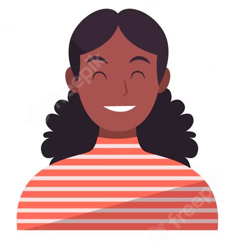
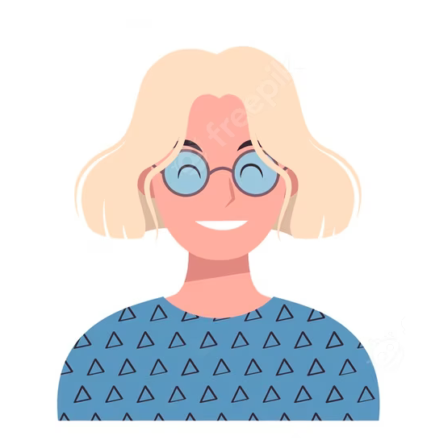
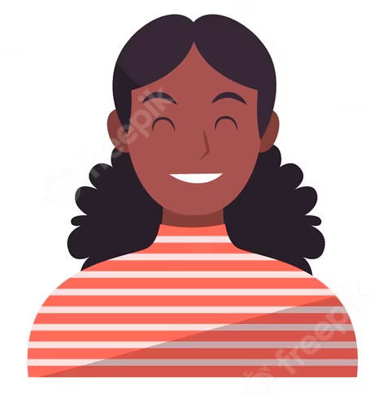
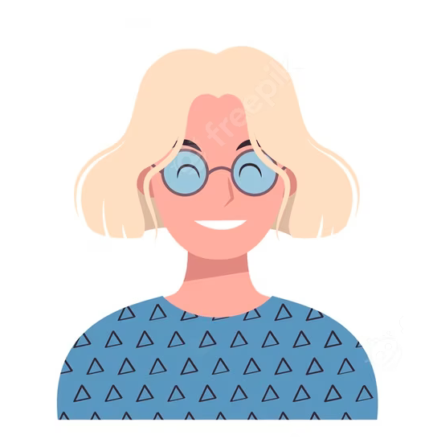

Quienes somos
¡Gracias por visitar nuestra página web! Somos una organización sin ánimo de lucro dedicada a marcar la diferencia en la vida de las personas vulnerables. Nuestro principal objetivo es proporcionar servicios para el hogar a aquellos que más lo necesitan, creando un puente entre personas vulnerables y empresas especializadas en brindar estos servicios.
Trabajamos incansablemente para asegurarnos de que las personas vulnerables tengan acceso a los servicios esenciales para el mantenimiento de sus hogares. Nos enorgullece facilitar la conexión entre aquellos que requieren ayuda y las empresas comprometidas que ofrecen servicios de calidad. Además, como organización, nos esforzamos por obtener subvenciones y ayudas para ayudar a cubrir los costos de estos servicios, aliviando así la carga económica para las personas vulnerables.
Creemos firmemente en la importancia de la solidaridad y la colaboración para construir una sociedad más justa y equitativa. Trabajamos en estrecha colaboración con las comunidades y las empresas locales para garantizar que todos tengan acceso a los servicios necesarios para llevar una vida digna y confortable.
Si desea formar parte de nuestra red solidaria o necesita nuestros servicios, no dude en ponerse en contacto con nosotros. Estamos aquí para brindar apoyo, encontrar soluciones y crear un impacto positivo en la vida de las personas vulnerables.
¡Juntos podemos marcar la diferencia!
 


